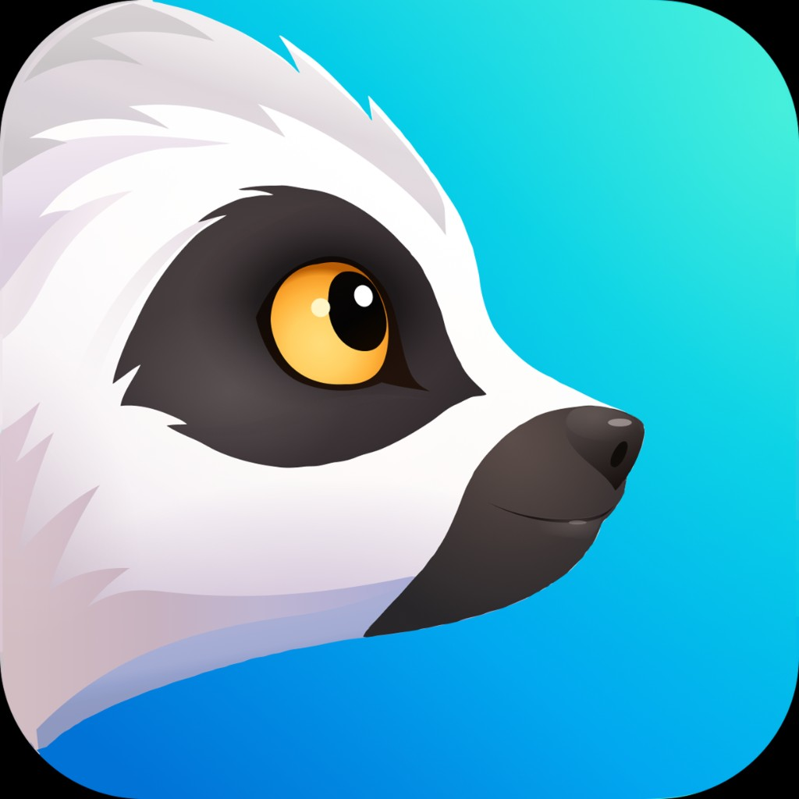
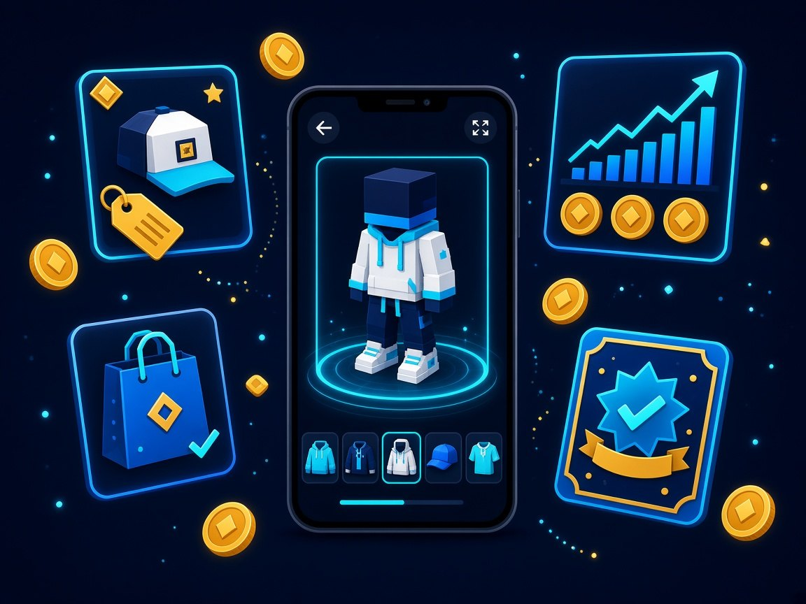
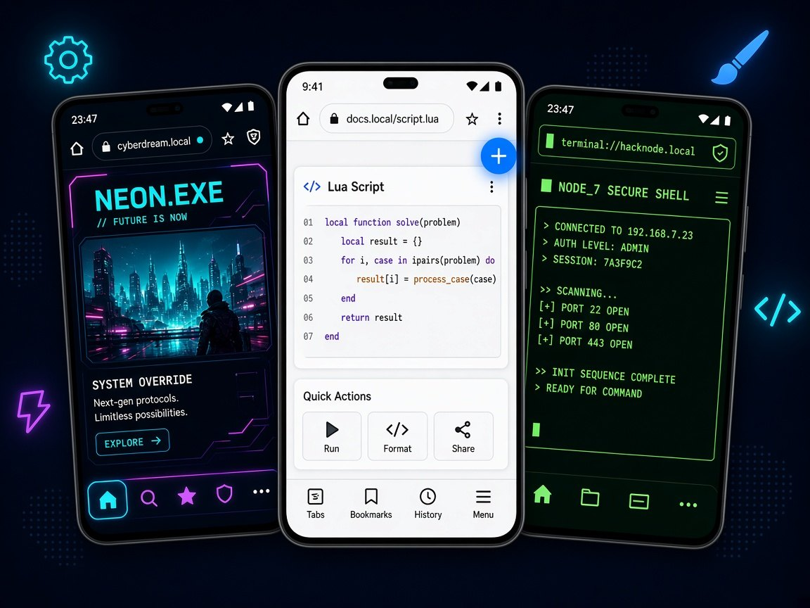
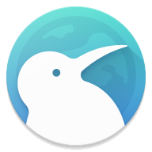
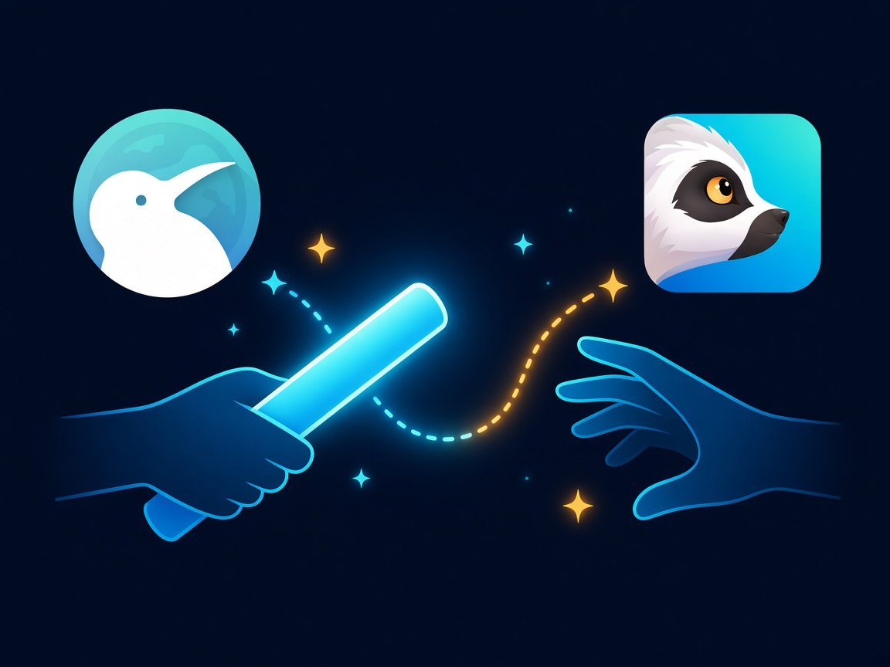
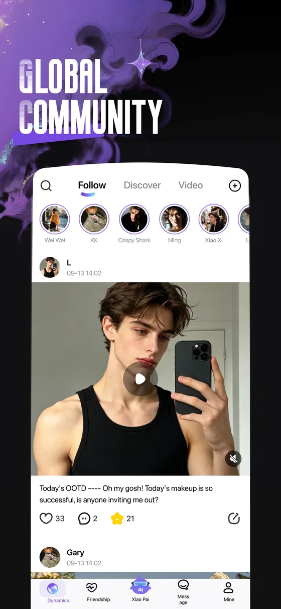
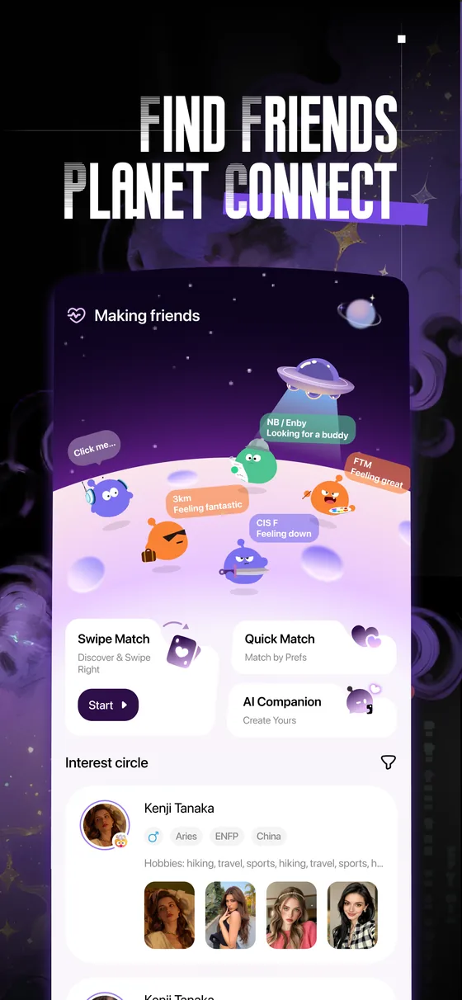
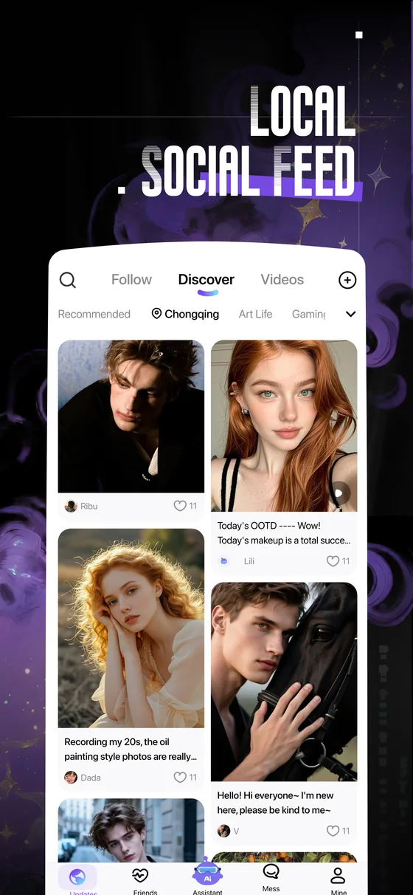

Lua 5.4 in the browser process
Scripts load from files/lua/ at startup. Local scripts get the full standard library — io, os, debug, require. Your device, your rules.
lemurx.tabs · net · http · fs · db · timer
Next generation · launching end of 2026 · Chromium · Android · Lua 5.4
The household desktop-class browser in Indonesia, Vietnam, Brazil, India and the Philippines.
Lemur is Chromium with a Lua runtime living inside the browser process.
Not an extension API — the whole thing: tabs, network, the DevTools Protocol,
the native toolbar, every renderer process. Drop a .lua file in,
restart, and the browser is yours.
lemurx.* modules
Why
Browser extensions live in a sandbox on the far side of an API designed to keep them out. A Lemur script is code running in the browser process, next to Chromium's own. Same privileges as the browser, because it is the browser.
net.addRule{ replaceBody = … }ui.render("toolbar.end", …)ui.dump() · ui.style() · ui.replace()cdp.send(tab, "Any.method", …)http.fetch(url)prefs.set · perm.set · features.enabledpage · dom_document · send-requestsystem.tree · system.tap · agent.runFeatures
From the pixels on the toolbar down to the C++ services behind chrome:// pages.
Scripts load from files/lua/ at startup. Local scripts get the full standard library — io, os, debug, require. Your device, your rules.
lemurx.tabs · net · http · fs · db · timer
Every CDP domain against every tab, iframe, worker and service worker — plus a browser-level target. v8.eval, dom.query, ax.tree, network emulation, geolocation, UA overrides.
lemurx.cdp · v8 · dom · ax · emulation
Persistent themes, a declarative widget tree mounted on nine slots in the real shell, and a scalpel for the native View hierarchy: style, replace, insert, detach, move, on.
lemurx.theme · ui.render · ui.style
The complete C-level Lua API of luakit re-implemented on Chromium: widget{} trees mapped to Android views, webview bound to a tab, luakit.register_scheme, sqlite3, regex, soup, stylesheet, timer, download, ipc_channel. An rc.lua written for luakit runs here.
widget · webview · luakit.register_scheme
Block, redirect, add or strip headers, rewrite response bodies with string replacements. Pattern-matched, per resource type, applied in the browser process before anything renders.
lemurx.net.addRule
One lua_State per renderer process with page, dom_document and dom_element on real V8 handles, a synchronous send-request hook on every subresource, and luakit.register_function to expose Lua to page JavaScript.
page · dom_document · send-request
Observe → act, in three layers and one coordinate system: the page (screenshot, set-of-marks, CDP), the browser shell (ui.dump, ui.find) and other apps through an accessibility service the user turns on once. Deciding is your model's job; agent.run is the loop.
lemurx.agent · lemurx.system
Local scripts are yours and run unrestricted. Shared scripts (UGC) run in their own lua_State with safe libraries only — no privileged API, no shared globals, no confused-deputy path back into yours.
files/lua/ vs files/lua/ugc/
lemurx.help() prints the whole catalog, lemurx.help("tabs") one module, and lemurx.catalog is the same list as a table. lemurx.ui.dump() shows the native view tree, lemurx.cdp.targets() every DevTools target. You never have to read our source.
lemurx.help · catalog · ui.dump
Show me the code
Each of these is a complete file. Save it to files/lua/, restart Lemur, done.
-- Block trackers at the network layer, strip leftovers in every frame.
lemurx.net.addRule({
match = "*://*.doubleclick.net/*",
action = "block",
})
lemurx.tabs.on("document", function(ev)
lemurx.tabs.inject(ev.id, [[
document.querySelectorAll('.ad, [id^="ad-"], [class*="sponsored"]')
.forEach(function (e) { e.remove(); });
]], { world = "isolated", frames = "all" })
end)-- A real button on the real toolbar, plus a persistent skin.
lemurx.theme.apply("midnight")
lemurx.ui.render("toolbar.end", {
type = "button", text = "Reader",
onClick = function()
local tab = lemurx.tabs.current()
if not tab then return end
lemurx.tabs.inject(tab.id, [[
document.body.style.maxWidth = "42em";
document.body.style.margin = "0 auto";
document.body.style.fontSize = "1.15em";
]], { world = "main" })
end,
})-- A floating HUD built from native views, refreshed twice a second.
local h = lemurx.ui.h
lemurx.ui.render("page.float", h("column", {
id = "hud", gravity = "end|bottom", padding = { 12, 8 }, radius = 14,
background = "#CC0B1020",
onClick = function() lemurx.ui.unmount("page.float") end, -- tap to dismiss
}, {
h("text", { id = "hud_title", text = "…", color = "#E6F1FF", size = 13, maxLines = 1, ellipsize = true }),
h("text", { id = "hud_meta", text = "", color = "#2EE6D6", size = 12, font = "monospace" }),
}))
lemurx.timer.every(500, function()
local t = lemurx.tabs.current()
if not t then return end
lemurx.ui.update("hud_title", { text = t.title or t.url })
lemurx.ui.update("hud_meta", {
text = ("%d tabs zoom %d%% %s"):format(
#lemurx.tabs.list(), lemurx.tabs.getZoom(t.id), t.loading and "loading" or "idle"),
})
end)-- The entire Chrome DevTools Protocol, on a phone, from Lua.
local tab = lemurx.tabs.current().id
lemurx.cdp.send(tab, "Emulation.setGeolocationOverride", {
latitude = 35.6762, longitude = 139.6503, accuracy = 1,
})
lemurx.cdp.send(tab, "Network.emulateNetworkConditions", {
offline = false, latency = 400, downloadThroughput = 50 * 1024, uploadThroughput = 20 * 1024,
})
local dpr = lemurx.v8.eval(tab, "innerWidth * devicePixelRatio")
local frames = lemurx.blink.frames(tab) -- Page.getFrameTree
local a11y = lemurx.ax.tree(tab) -- full Blink accessibility tree, as a Lua table
print(dpr, #frames.result.frameTree.childFrames, #a11y.result.nodes)-- The toolbar, the menu and the system dialogs are plain Android views. Rewire them.
local h = lemurx.ui.h
-- Replace the real Home button with "to top".
lemurx.ui.replace({ id = "home_button" }, h("button", {
id = "my_home", text = "↑", background = "#FF00C853", color = "#FFFFFFFF",
onClick = function()
local t = lemurx.tabs.current()
if t then lemurx.tabs.eval(t.id, "window.scrollTo({top:0,behavior:'smooth'})") end
end,
}))
-- Take over a native click without swallowing it; restyle the drawer once it is open.
lemurx.ui.on({ id = "menu_button_wrapper" }, "click", function()
lemurx.timer.after(400, function()
lemurx.ui.style({ text = "History" }, { color = "#FFFF5252", once = true })
end)
end, { consume = false })
-- Don't know the id? Ask.
print(lemurx.ui.shell().found) -- known shell ids and whether they are still there
lemurx.ui.dump({ maxDepth = 6 }) -- every window: Activity, Dialogs, PopupWindows-- Chromium's own services, from Lua: PrefService, content settings, feature flags, browsing data.
local p = lemurx.prefs.get("safebrowsing.enabled", "bool")
print(p.value, p.isDefault, p.managed)
lemurx.prefs.set("webkit.webprefs.default_font_size", "int", 18)
lemurx.perm.set("https://example.com", "javascript", "block")
lemurx.perm.set("https://maps.example", "geolocation", "allow")
print(lemurx.features.enabled("BackForwardCache"),
lemurx.features.param("BackForwardCache", "cache_size"))
for _, v in ipairs(lemurx.history.query("github")) do print(v.title, v.url) end
for _, c in ipairs(lemurx.cookie.get("https://github.com")) do print(c.name, c.httpOnly) end
lemurx.data.clear({ "cache", "site_data" }, "hour") -- BrowsingDataRemoverArchitecture
One Lua thread, one JSON protocol in each direction, and every Chromium layer on the other side of it.
All scripts run on one sequenced thread. UI work is posted to the UI thread and awaited. Java callbacks that need a return value are refused instantly when Lua is busy — no UI↔Lua deadlock, ever.
Every hook added to Chromium — URL-loader and navigation throttles, certificate override, custom schemes, back press, app menu, renderer Lua — is gated on state that only a script can create. With no script running each hook is an early return and the browser behaves like the official build it was compiled from.
The three-dot menu always ends with a plain Android switch for the Lua runtime that no Lua API can reach or hide. If the process dies twice within 20 s of starting scripts, the runtime disables itself and the browser comes up stock — a script can never lock you out of the browser you need to fix it.
Scripts
Anything in files/lua/ugc/ is a shared script: it gets the browser-facing API — tabs, network rules,
HTTP, UI widgets, storage — and nothing that could read your cookies, history, or reach the DevTools Protocol.
Each one runs in its own Lua state, so it can't touch your globals or ride your privileged callbacks.
load, no bytecode, no dofilelemurx.cookie · history · cdp · prefs · system · luakit nativesfs jailed to lua/ugc, http.fetch capped at 2 MB / 20 slemurx.ugc.scan(src) lints for forbidden calls before you publishexpose() a curated function for UGC to import()LemurX Lua 1.12.1 privileged=false
脚本：filesDir/lua/*.lua 本地特权；filesDir/lua/ugc/*.lua 可分享、无特权
调用：lemurx.help() 或 lemurx.help('tabs')
## 原生界面 (ui)
show({id,type='button'|'text'|'edit', text, gravity, x, y, onClick})
remove(id) clear()
dump([{maxDepth,maxNodes,gone}]) -- 所有窗口，含工具抽屉 Dialog
find({text,id,desc,class}) click(query) longClick(query)
setText(query, text) getText(query) visible(query,false) enabled(query,false)
dialog({title,message,ok,cancel,onOk,onCancel}) alert() prompt()
shell() -- 底栏/地址栏/搜索框已知 id + 是否还在
children(query) replace(query, tree) insert(query, tree[, {position='after'|'before'|'into'}])
detach(query) restore([query]) move(query, {parent,index,before,after})
on(query, 'click'|'longclick'|'touch'|'focus'|'text', fn[, {consume,move,max}]) off(key|'*')Extensions
Lemur runs the same extension engine as desktop Chromium. Install straight from the Chrome Web Store or Edge Add-ons, drop in your userscripts, and keep the setup you've spent years tuning — on a phone.
Extensions get their own toolbar slot, popups render as bottom sheets, and Lua can talk to them — lemurx.ui.render("toolbar.end", …) sits right next to their icons.

 Roblox power users
Roblox power users
A huge share of Lemur's community lives on Roblox — and they refuse to trade without their extensions. RoPro, BTRoblox and Roblox+ run on Lemur exactly as they do on desktop: try outfits on your avatar before you buy, watch limited-item prices, get trade notifications, and flip items from the phone in your pocket.
lemurx.timer + lemurx.httpFreedom
Every other mobile browser gives you a theme picker. Lemur gives you the toolbar, the tab strip, the gestures, the network stack and the rendering pipeline — and a scripting language to rewire them. If you can describe it, you can ship it to yourself tonight.

Engine
Customization is worthless on a stale engine. Lemur rebases onto each new Chromium stable so the security patches, V8 speedups and web-platform features land in your hands when they land in Chrome's.
Upstream site isolation, sandboxing and the same-day security fixes Chromium ships. Lemur's additions live beside Chromium's code, not on top of a fork that drifts.
Current V8, Skia and the latest Android graphics path. Lua runs on its own thread and never touches the render pipeline unless you tell it to.
No account required, no tracking baked in. Block at the network layer, strip headers, kill third-party cookies — and audit every rule from Lua, because the rules are yours.
Sync
Sign in once and your Lemur follows you. New phone? Restore the toolbar you built, the extensions you trust and the Lua scripts you wrote — in the order you installed them, with their settings.
files/lua/ as a versioned bundle; roll back any script to any previous version-- @nosync stay on the device
LineageKiwi Browser proved that a phone browser could run real extensions — then, in January 2025, its founder archived the project after nearly seven years of solo maintenance. The idea was too good to let die. Lemur carries it forward as a commercial, closed-source browser that opens as much as it possibly can through Lua: extension-first, scriptable to the native layers, built so that what you need actually comes true.
"I just wanted extensions on mobile for myself." — Arnaud Granal, on why Kiwi existed
If you're a hacker, Lemur was built for you.

Community
Lemur's UGC community is one place for every kind of add-on: browser extensions, userscripts, and Lua scripts that reach all the way down into the native layers. Publish with one tap, fork anyone's work, remix it, and ship it back. The freedom to create is what turned a browser into a movement.
lemurx.ugc.scan() lints before you publishexpose() curated APIs for community scripts to build onEcosystem
Paip.AI is the interest-based social app the founding team built between 2024 and 2026 — real people, real posts, and smart matching that finds friends on your wavelength. Lemur's UGC community runs on Paip.AI's technology and shares one ecosystem with it: one identity, one creator profile, one feed where a Lua script, a skin or an extension collection travels as naturally as a post.



Our mission
Lemur was born in 2020 with a stubborn idea: the person holding the phone should have the final say over the software on it. Six years later, five million power users across the world make Lemur their first choice — not because it's the prettiest browser, but because it's the only one that does exactly what they tell it to.
On 6 March 2024, Kevinlinpr stepped down as CEO and the founding team left the company to build Paip.AI, an interest-based social app. On 6 September 2026, Kevinlinpr bought back 100% of the company and returned to take charge of Lemur's future. The brief is simple: open every layer, ship on the latest Chromium, and never make a decision the user can't override. The freedom we promised six years ago is about to get a lot bigger.
The next browser is Lemur.
Next-generation Lemur — arriving end of 2026
Docs
Five-minute start, threading model, the two trust domains, every module with examples, recipes, pitfalls, UGC publishing rules.
Read → ReferenceThe same list lemurx.help() prints, rendered: tabs, net, cdp, ui, agent, the luakit layer, the renderer classes and the rest.
Per-site skins, reader mode, desktop-mode memory, back-gesture guard, redirect-page skipping, cross-origin scraping into a floating panel.
Cook →Next-generation Lemur arrives end of 2026. The current Lemur Browser is on Google Play today.
Android 8.0 or newer · arm64 · latest Chromium stable · Lua 5.4.7 · Chrome & Edge extensions · userscripts
Then drop a .lua file into the app's files/lua/ directory, restart,
and watch lemurx.help() print the whole API in logcat.